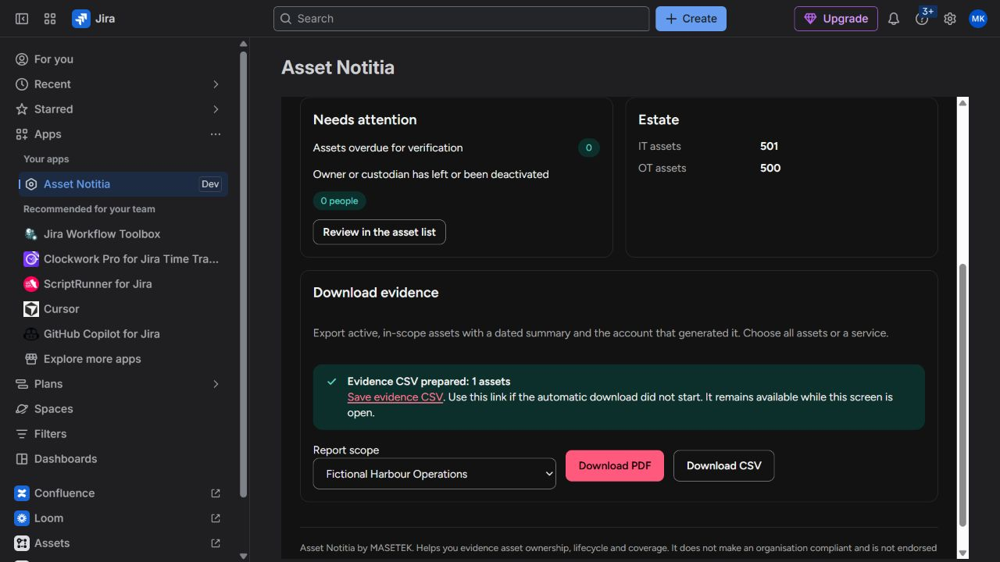

MASETEK · JIRA CLOUD
Know the asset.
Know the owner.
An IT and OT register built around accountable ownership, lifecycle reviews and clear evidence.

From an inventory to a useful record
Make responsibility clear
Give each asset an accountable owner and technical custodian. Review criticality, verification and lifecycle information together.
Connect the estate
Group supporting assets into services, record dependencies and link existing Jira work without copying issue descriptions.
Keep evidence usable
Validate CSV imports, compare a source list with your register and prepare dated PDF and CSV evidence by service or estate.
Start with the guide
Asset Notitia is free to use with Jira Cloud. It does not discover devices, automatically create Jira issues or certify regulatory compliance. Read the guide and policy pages before installation.